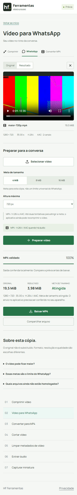
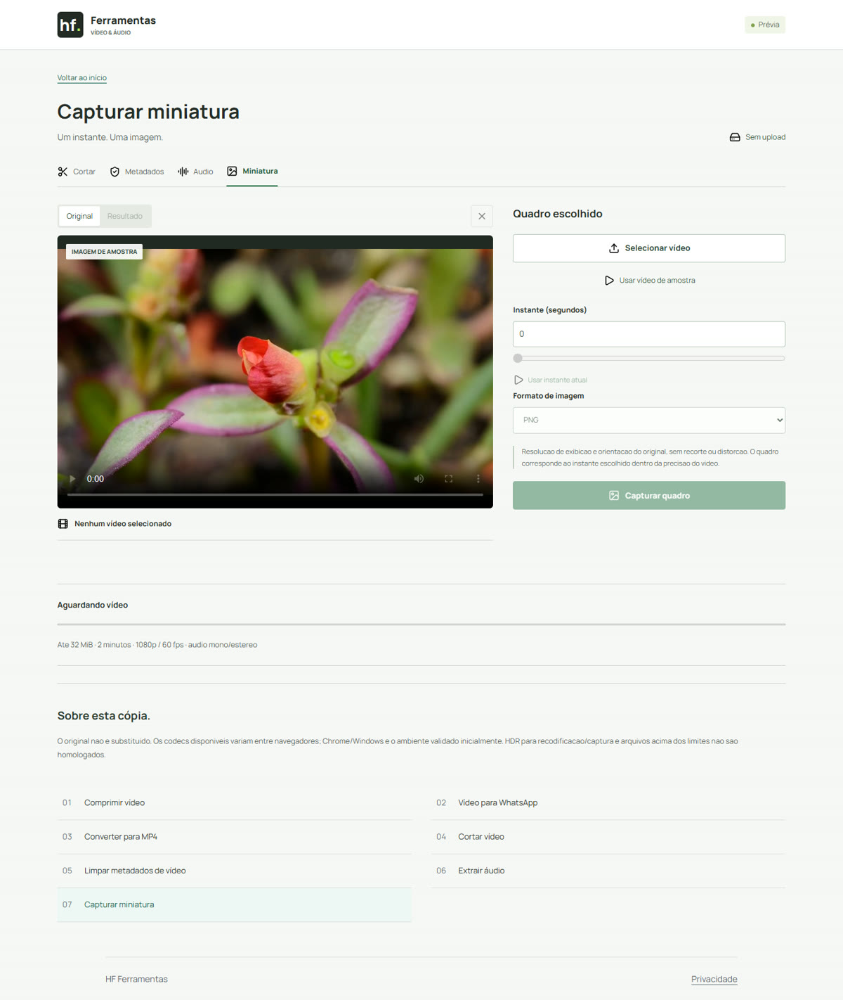

ARQUIVOS, ESCOLHAS E CUIDADOS
Guias de vídeo
Do arquivo original à cópia que você quer compartilhar.
 01
01Tamanho & envio
Como reduzir o tamanho de um vídeo e avaliar a qualidade
Uma cópia menor só ajuda se os detalhes importantes continuarem legíveis.

02Tamanho & envio
Como preparar um vídeo grande para compartilhar no WhatsApp
Escolha uma meta, confira o tamanho real e teste o arquivo no destino.
 03
03Formato & corte
Como converter um vídeo para MP4
Saiba quando converter as trilhas e quando apenas reempacotar o arquivo.
 04
04Formato & corte
Como cortar um vídeo no celular
Defina um intervalo sem confundir corte de duração com recorte da imagem.
 05
05Dados & privacidade
O que os metadados de um vídeo podem revelar
Separe campos descritivos, dados de reprodução e informações visíveis na cena.
06Dados & privacidade
Como remover e conferir metadados de um vídeo
Selecione os campos, gere outra cópia e confira o que saiu e o que permaneceu.
 07
07Áudio & imagem
Como extrair áudio de um vídeo
Escolha WAV ou M4A e confira se a trilha inteira foi preservada.

08Áudio & imagem
Como capturar uma imagem de um vídeo
Encontre o quadro certo sem fotografar a tela nem distorcer a proporção.
09Formato & corte
MP4, MOV e WebM: formato e codec não são a mesma coisa
A extensão sozinha não responde se o vídeo vai abrir ou pode ser copiado.
10Dados & privacidade
Cuidados ao compartilhar vídeos com dados pessoais
Revise o arquivo, a cena, o som e o destino. Uma limpeza isolada não cobre tudo.
Nenhum guia encontrado.
Textos elaborados por Codex (assistente de IA), com referências técnicas e exemplos locais. Revisão editorial humana pendente.